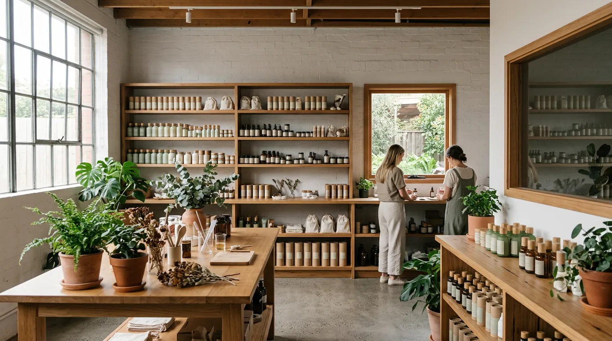
Seasonal Ritual
계절마다 달라지는
피부의 이야기
봄의 재생, 여름의 진정, 가을의 보습, 겨울의 보호.
에코라브 스킨은 자연의 순환을 따릅니다.
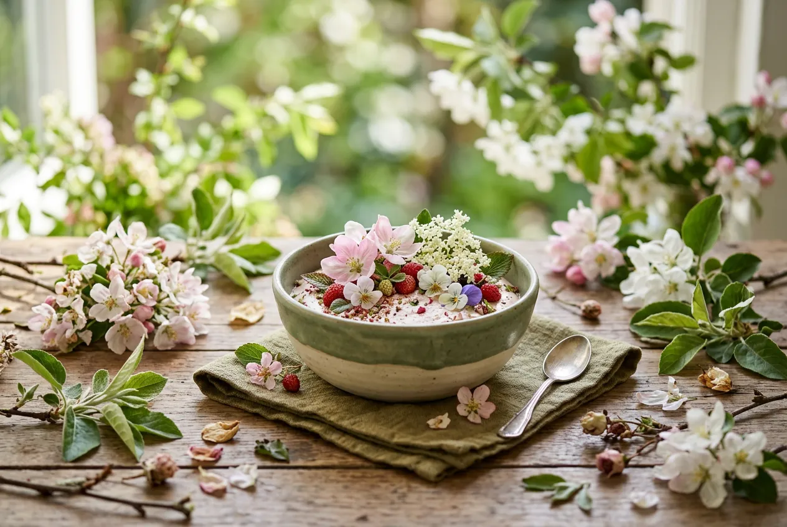
Spring
재생
겨울 동안 지친 피부에
생기를 되찾아 줍니다
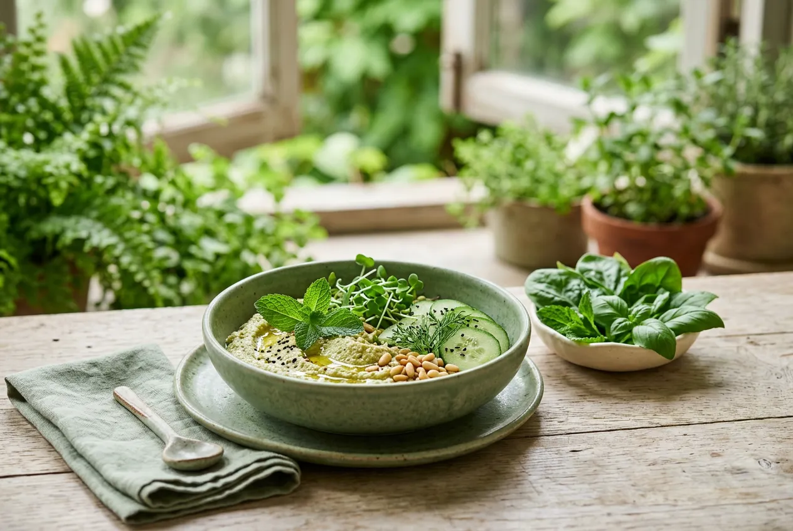
Summer
진정
강한 자외선과 열기 속에서
피부를 시원하게 달래줍니다
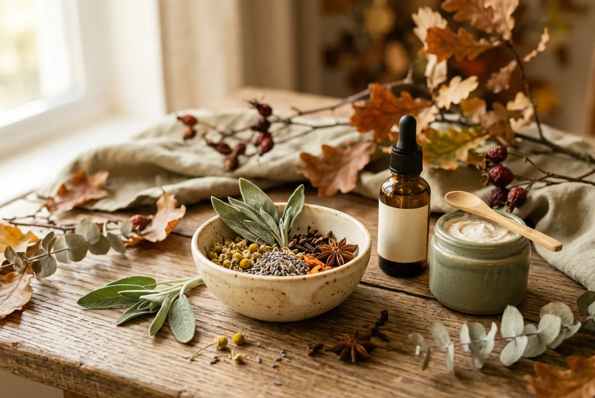
Autumn
보습
건조해지는 환절기,
깊은 수분을 채워 넣습니다
Winter
보호
찬 바람과 건조함으로부터
피부 장벽을 지켜줍니다
Product Collection
자연이 처방한
네 가지 답
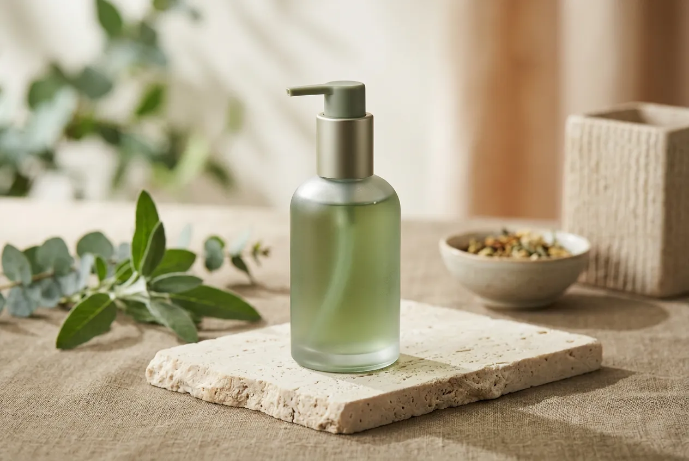
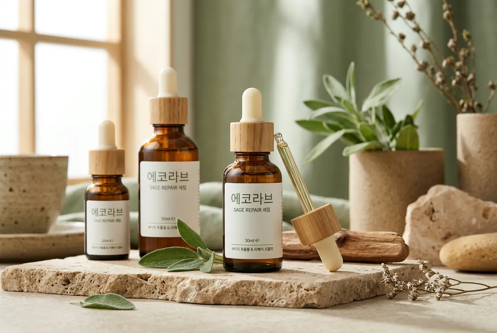
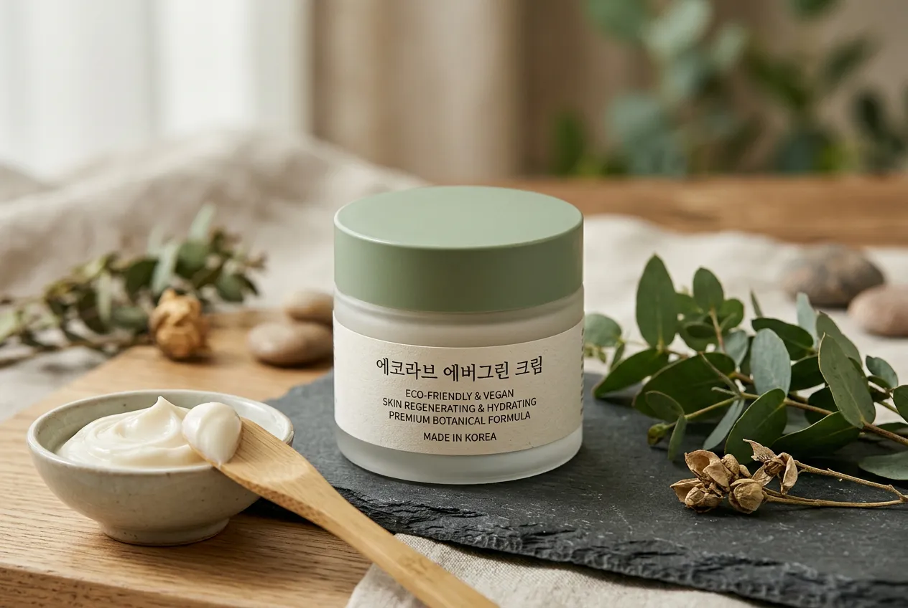
Botanical Cleanser
보태니컬 클렌저
제주 녹차 추출물과 병풀 성분이 피부의 노폐물을 부드럽게 제거합니다.
세안 후에도 당김 없이 촉촉한 마무리를 경험하세요.
Sage Repair Serum
세이지 리페어 세럼
제주 세이지 오일과 히알루론산 3중 복합체가 손상된 피부 장벽을 집중 케어합니다.
가벼운 텍스처로 빠르게 흡수되어 속부터 차오르는 수분감을 선사합니다.
Evergreen Cream
에버그린 크림
제주 동백유와 시어버터가 오래도록 지속되는 보습 장벽을 형성합니다.
사계절 내내 건강한 피부를 유지할 수 있도록 설계된 데일리 크림입니다.
Special Set
에코라브 스페셜 세트
클렌저 + 세럼 + 크림, 세 가지를 한 번에 경험하세요.
개별 구매 대비 16% 할인된 가격으로 풀 루틴을 시작할 수 있습니다.
제주의 들판에서
당신의 손끝까지
씨앗에서 제품이 되기까지,
모든 과정에 자연의 정직함을 담았습니다.
Ingredients
성분 하나에도
기준이 있습니다
EWG 그린 등급, 비건 인증, 동물실험 제로.
타협 없는 원칙이 신뢰가 됩니다.
EWG 그린 등급
모든 성분 안전성 검증 완료
비건 인증
한국비건인증원 공식 인증
동물실험 제로
개발부터 완제품까지 No Animal Testing
피부과 테스트 완료
민감성 피부 임상 시험 통과
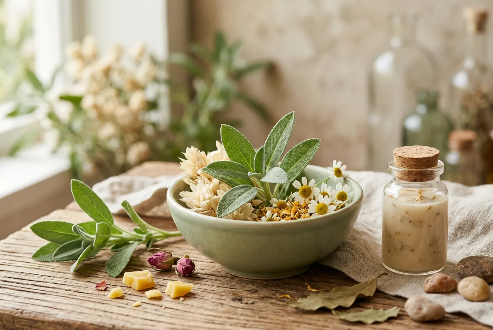
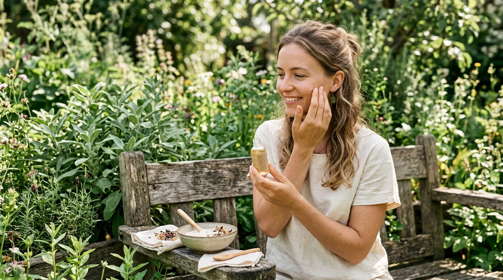
Sustainability
지구에게도
좋은 선택
리필 프로그램, 재활용 패키지, 탄소중립 배송.
아름다움은 책임과 함께 합니다.
리필 프로그램
공병 반납 시 20% 할인 리필 제공.
용기 재사용으로 플라스틱을 줄입니다.
재활용 패키지
FSC 인증 종이, 콩기름 잉크 인쇄.
박스부터 완충재까지 100% 재활용 소재.
탄소중립 배송
배송 과정에서 발생하는 탄소를
제주 숲 조성 프로젝트로 상쇄합니다.
Founder Story
제주의 시간 속에서
답을 찾았습니다
10년간 제주 서귀포 농장에서 식물을 관찰해온 김소윤 대표. 피부과학과 자연의 접점에서 에코라브 스킨이 탄생했습니다.
"좋은 화장품의 시작은 좋은 원료입니다.
— 김소윤, 에코라브 스킨 대표
제주의 흙, 바람, 계절이 만든 식물에는
어떤 실험실도 흉내 낼 수 없는 힘이 있어요."
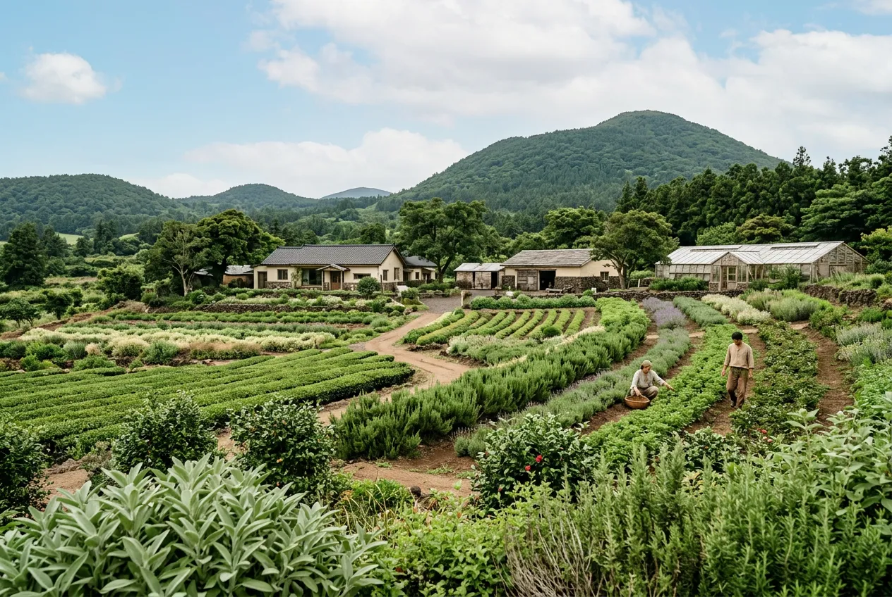
Reviews
피부가 먼저
알아본 변화
"환절기마다 올라오던 붉은기가
세럼 하나로 정리됐어요.
바르는 순간 피부가 편안해지는 느낌."
김하은
건성 · 민감성 / 31세
"세트로 사서 한 달 째 쓰고 있는데, 피부결이 확실히 달라졌어요. 특히 크림 텍스처가 가벼워서 아침에도 부담 없이 쓸 수 있습니다."
박준서
복합성 / 27세
"비건 화장품이라 효과가 약할 줄 알았는데, 클렌저 세정력이 확실하면서도 피부가 안 땅겨요. 성분 꼼꼼한 분들에게 강추합니다."
이수빈
지성 · 여드름성 / 24세
주문 후 1~2 영업일 내 출고되며, 출고 후 1~2일 내 배송됩니다. 제주도 및 도서산간 지역은 1~2일 추가 소요될 수 있습니다. 50,000원 이상 구매 시 무료 배송입니다.
수령 후 7일 이내 미개봉 상품에 한해 교환 및 환불이 가능합니다. 개봉 후에는 제품 하자가 있는 경우에만 교환이 가능하며, 고객센터(064-123-4567)로 연락해 주세요.
네, 모든 제품은 피부과 전문의 임상 테스트를 완료했으며, EWG 그린 등급 성분만 사용합니다. 다만 특정 성분에 알레르기가 있으신 경우, 전성분 목록을 확인해 주시기 바랍니다.
공병을 세척 후 배송하시면, 리필 제품을 정가의 20% 할인된 가격으로 받으실 수 있습니다. 공병 반납 배송비는 무료이며, 온라인 스토어 '리필 프로그램' 메뉴에서 신청 가능합니다.
현재 2개월 주기 정기구독 서비스를 운영 중입니다. 정기구독 회원에게는 매회 15% 할인과 계절별 한정 샘플이 함께 배송됩니다. 온라인 스토어에서 '구독하기' 메뉴를 확인해 주세요.
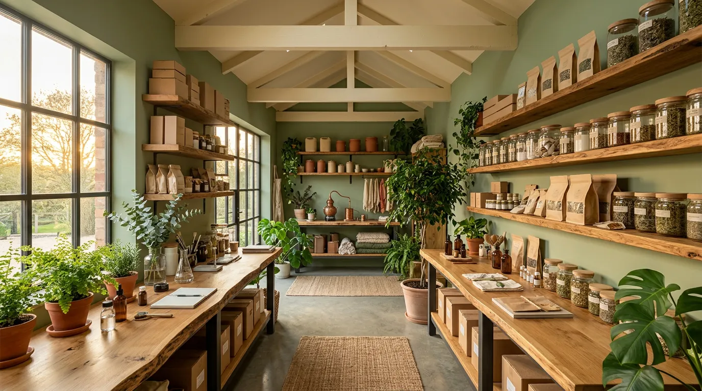